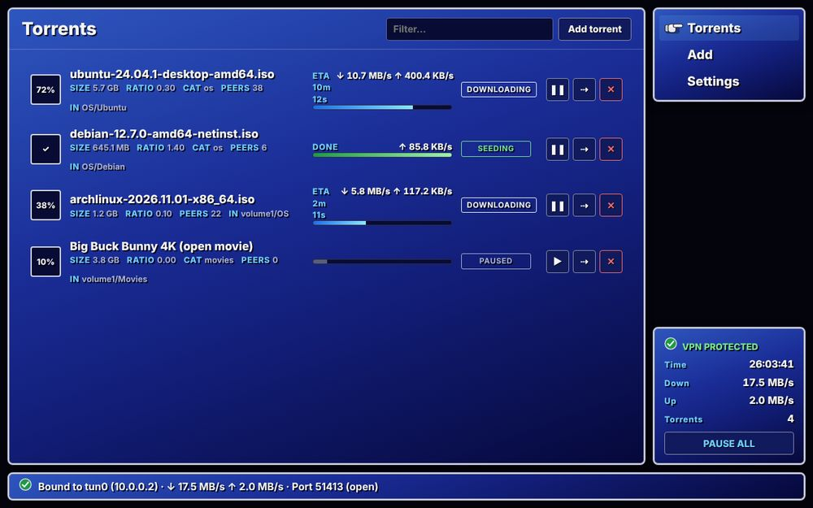
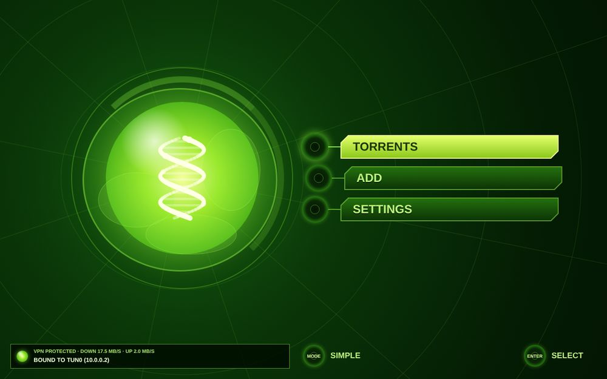

The Lifestream suite
Six apps.
One look.
A set of media tools that share a design, inspired by a certain classic role-playing menu, and talk to each other behind the scenes.
Meet the party.
Each app does one job well. Together they handle your whole library.
Lifestream
The download engine. Torrents that only ever travel through your VPN.
Learn more ›
Midgar
Watches your TV shows and grabs new episodes as they air.
Learn more ›
Turks
Finds, downloads, files and upgrades the movies you want.
Learn more ›
Materia
Every tracker and indexer in one place, synced to the rest of the suite.
Learn more ›
DeBarrier
Gets Materia’s searches through Cloudflare checks.
Learn more ›
Jenova
Fetches subtitles the moment a new file lands.
Learn more ›
Four looks. One switch.
Every app in the suite can wear any of four looks, and they stay in sync: Dark Glass, FFVII menu, Xbox and Blades.




How the work flows.
DeBarrier sits beside Materia and steps in whenever a site puts up a Cloudflare check. Every app runs on Windows and on a Synology NAS.